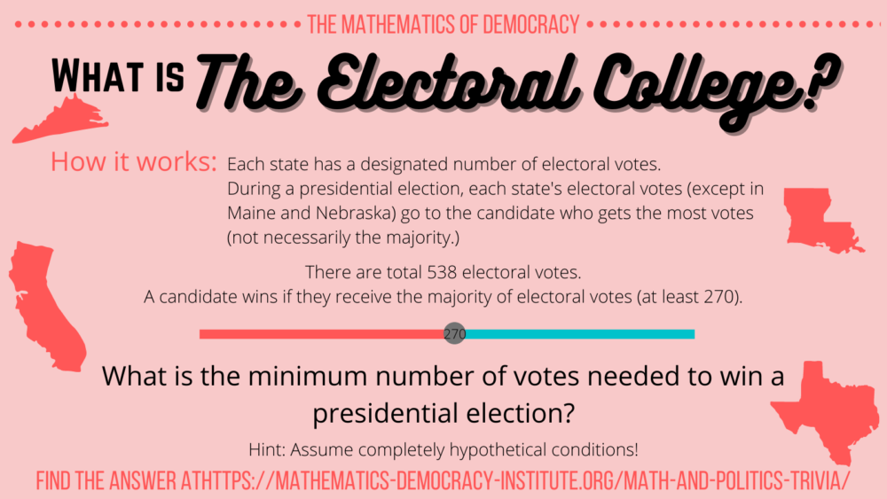
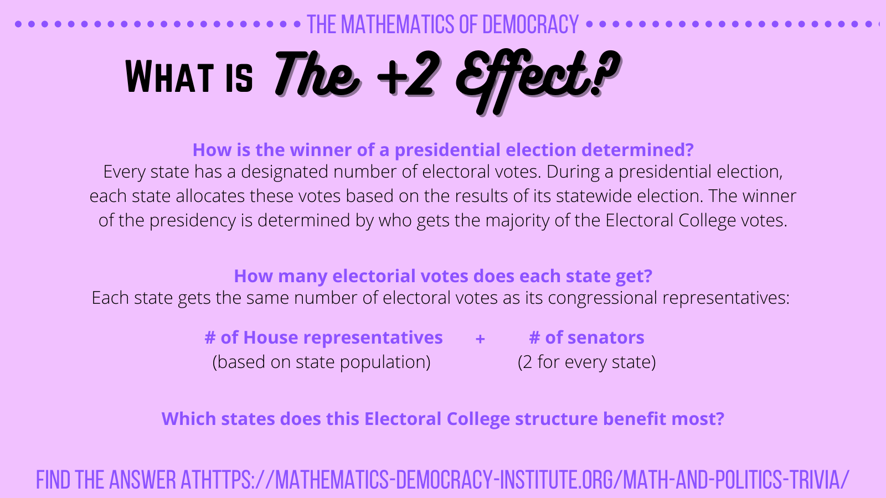
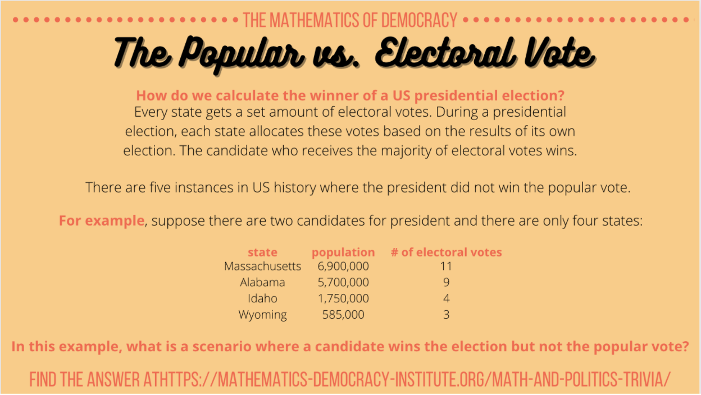
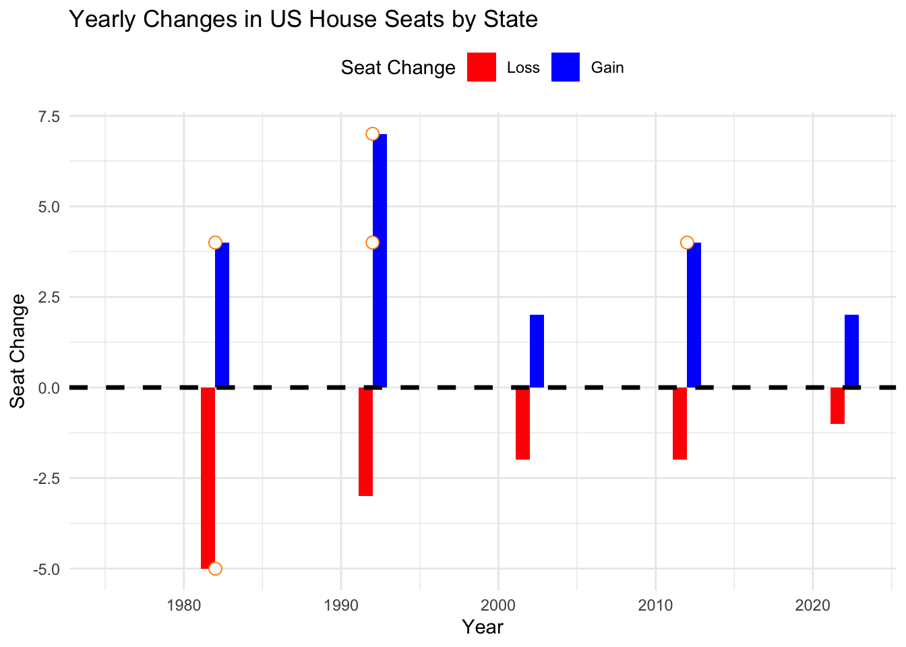
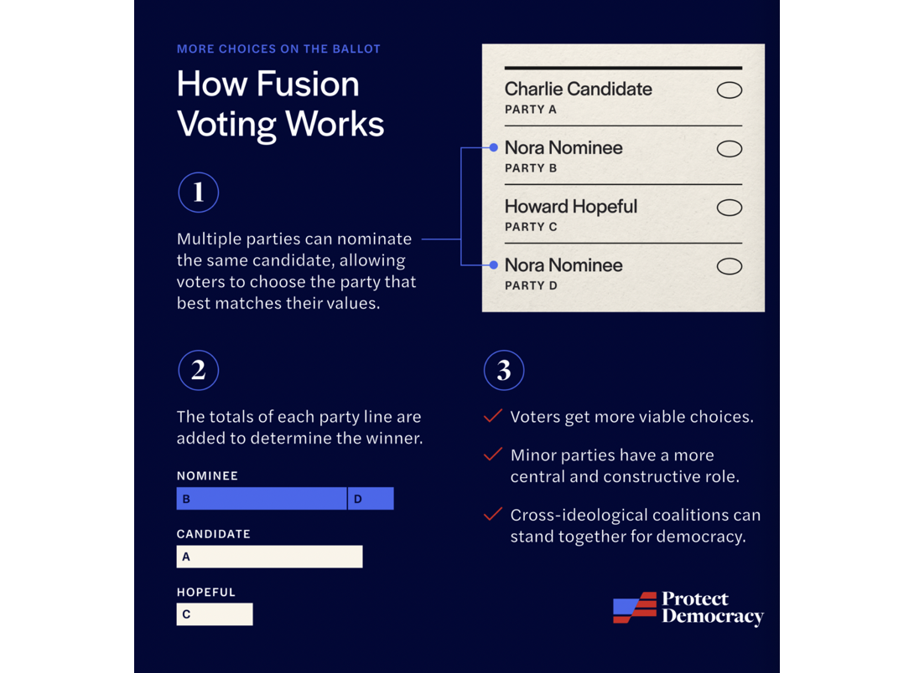
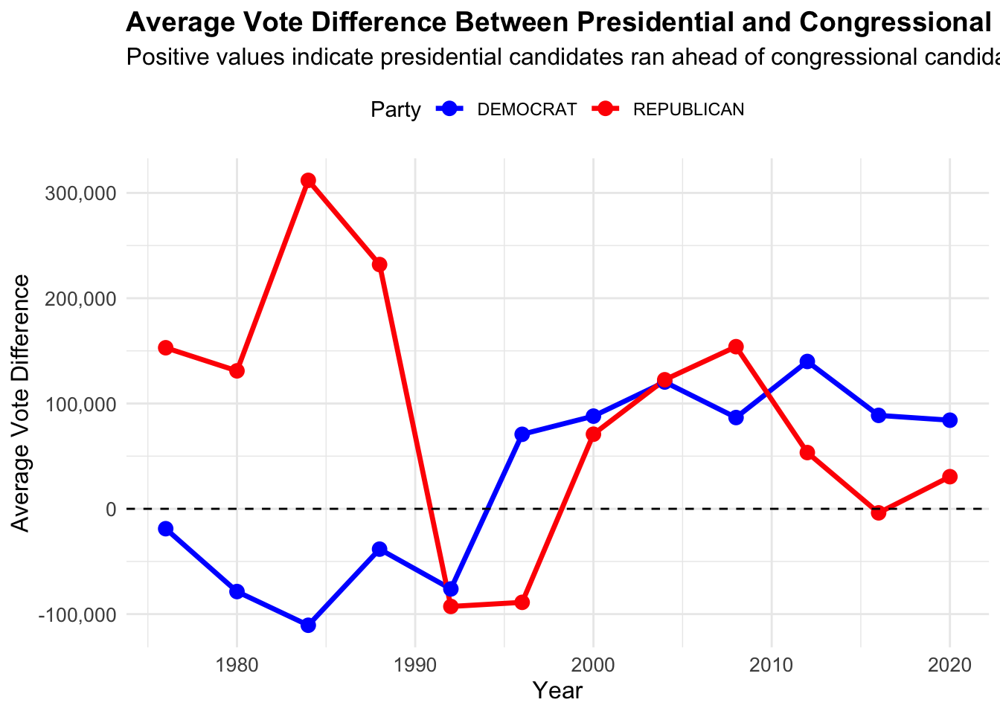

{kind=link}
Code
library(dplyr)
library(readr)
library(stringr)
library(gt)
library(sf)
library(ggplot2)
library(scales)Abstact
This project aims to display a political fact-check, investigating the claim that the US Electoral College systemically biases election results away from the voice of the people (vox populi).
Background
As a refresh, the basic rules of electing the President of the United States, as outlined in the US Constitution is as follows. The selected visuals provide a clear understanding of how the electoral college allocates their votes in each state. For further background information, you may review the attached summary of the electoral college from the Institute For Mathematics and Democracy

Each state gets R + 2 electoral college votes, where R is the number of Representatives that state has in the US House of Representatives.
For the purposes of this project, the # of districts in a state = the # of congressional representatives

The “+2 effect” refers to the impact of the two additional electoral votes that every state receives due to its two Senate seats. While a state’s representation in the House—and therefore a portion of its electoral votes—reflects its population size, these two extra votes are the same for every state, regardless of population. As a result, individual votes in smaller states carry slightly more weight than in larger states because of this fixed “plus two” factor.

This image explains the difference between the popular vote and the electoral vote in U.S. presidential elections. Each state has a set number of electoral votes, which are generally based on its population, but every state also gets two additional votes for its senators. This can create situations where the electoral vote winner does not align with the popular vote winner.
There are several proposed ideas for reforming the Electoral College, addressing criticisms of the current winner-take-all-system, used by all states other than Maine and Nebraska today.
Maine and Nebraska split Electoral College Votes (ECVs) by congressional district.
An important note is the allocation of ECVs is decided on a state level, and is not dictated by the Constitution. Reform is possible without constitutional amendments if states decided to change their approach.
This project will walk us through different methods of ECV allocation, and see how the outcome of the US presidential elections would have changed.
This step involved downloading a dataset of the votes from all biennial congressional races in all 50 states and saving as a CSV file using a web browser. The data came from the MIT Election Data Science Lab.
Another dataset downloaded was the statewide presidential vote counts from 1976 to 2022, which may be found
The code below loads the election data into our environment.
Task 1: Download Congressional Shapefiles 1976-2012
&
Task 4: Automate Zip File Extraction
The congressional district shapefiles, covering U.S. congressional districts from 1789 to 2012, are provided by Jeffrey B. Lewis, Brandon DeVine, Lincoln Pritcher, and Kenneth C. Martis. These files can be accessed on the Harvard Dataverse here.
The code below automates the download of files from the 94th to the 112th Congresses (1976-2012) and extracting the shapefiles from within the zip files.
The steps taken involve:
Defining the function get_congressional_shapefile(), which automates the download and import of congressional district shapefiles for the specified range of congressional sessions (94 to 112)
Storing each shapefile in a zip archive while the function checks if the file already exists locally. If not, file is downloaded. This avoids any redundant downloads.
Unzipping downloaded zip file, and the shapefile within is read into R using read_sf()
A few additional steps were added to handle the large and complex shapefiles. The code includes a few lines involved in standardizing and simplifying the shapefiles.
The steps taken involve:
st_transform() is applied to reproject each shapefile to a common Coordinate Reference System (CRS), which uses latitude and longitude coordinates, which are useful when working with geographic data
st_simplify() simplifies the geometries of each shapefile. This reduces the number of intricate edges and details, making for improved performance while maintaining accuracy
sf_use_s2(FALSE) is set to avoid any issues with spherical geometry when simplifying data in a projected CRS
Finally, we consolidate all shapefiles into the spatial object ALL_SHAPES.
sf::sf_use_s2(FALSE)
get_congressional_shapefile <- function(congress_number) {
BASE_URL <- "https://cdmaps.polisci.ucla.edu/shp/"
fname <- paste0("districts", formatC(congress_number, width = 3, format = "d", flag = "0"), ".zip")
if (!file.exists(fname)) {
FILE_URL <- paste0(BASE_URL, fname)
download.file(FILE_URL, destfile = fname)
}
zip_contents <- unzip(fname, exdir = tempdir())
shp_file <- zip_contents[grepl("shp$", zip_contents)]
sf_data <- read_sf(shp_file)
sf_data <- st_transform(sf_data, crs = 3857)
sf_data <- st_simplify(sf_data, dTolerance = 1000)
sf_data <- st_transform(sf_data, crs = 4326)
sf_data$congress_number <- congress_number
return(sf_data)
}
ALL_SHAPES <- bind_rows(lapply(94:112, get_congressional_shapefile))Task 2: Download Congressional Shapefiles 2014-2022
get_census_shapefile <- function(year, congress_number) {
BASE_URL <- paste0("https://www2.census.gov/geo/tiger/TIGER", year, "/CD/")
fname <- paste0("tl_", year, "_us_cd", congress_number, ".zip")
if (!file.exists(fname)) {
FILE_URL <- paste0(BASE_URL, fname)
download.file(FILE_URL, destfile = fname)
}
zip_contents <- unzip(fname, exdir = tempdir())
shp_file <- zip_contents[grepl("shp$", zip_contents)]
sf_data <- read_sf(shp_file)
return(sf_data)
}
for (year in 2014:2022) {
congress_number <- if (year <= 2015) {
114
} else if (year <= 2017) {
115
} else {
116
}
sf_data <- get_census_shapefile(year, congress_number)
assign(paste0("congress_", year, "_sf"), sf_data)
}Task 3: Exploration of Vote Count Data
States Gaining and Losing House Seats (1976-2022)
For a better understanding to how the number of Representatives per state is determined, refer to this essay for more information.
In summary,
The number of US House seats per state can change every 10 years, following the decennial census conducted by the US Census Bureau. This census determines the population distribution across states, and seats in the House of Representatives are then reapportioned based on these updated population counts.
The national total number of House seats is fixed at 435, but individual states may gain or lose seats based on shifts in the population.
First attempt: Not showing each state
house_seats_by_year <- house_votes |>
group_by(year, state_po) |>
summarize(num_districts = n_distinct(district), .groups = 'drop')
# Step 2: Calculate the year-over-year seat changes for each state
seat_changes <- house_seats_by_year |>
arrange(state_po, year) |>
group_by(state_po) |>
mutate(seat_change = num_districts - lag(num_districts, default = first(num_districts))) |>
ungroup()
# Step 3: Identify the years with the largest seat changes
largest_changes <- seat_changes |>
filter(!is.na(seat_change)) |>
arrange(desc(abs(seat_change))) |>
top_n(5, abs(seat_change)) # Selecting the top 5 largest changes
# Step 4: Plot the seat changes over time with enhancements
ggplot(seat_changes, aes(x = year, y = seat_change, fill = seat_change > 0)) +
geom_bar(stat = "identity", position = "dodge") +
# Add a prominent line at y = 0
geom_hline(yintercept = 0, color = "black", size = 1.2, linetype = "dashed") +
# Add markers for years with the largest changes
geom_point(data = largest_changes, aes(x = year, y = seat_change),
color = "darkorange", size = 3, shape = 21, fill = "white") +
scale_fill_manual(values = c("TRUE" = "blue", "FALSE" = "red"),
labels = c("Loss", "Gain")) +
labs(title = "Yearly Changes in US House Seats by State",
x = "Year",
y = "Seat Change",
fill = "Seat Change") +
theme_minimal() +
theme(legend.position = "top")
Recognizing the need for consistent state abbreviations to enhance the clarity of visualizations, I identified that the house_seats_by_year table lacked state abbreviations, which would make presenting net changes by state more straightforward. To address this, I used R’s built-in datasets, specifically state.name and state.abb, which contain full state names and their corresponding abbreviations.
The next few chunks of code modify the house_seats_by_year table.
state_abbreviations <- data.frame( state_name = state.name, state_abbreviation = state.abb )
Adjusting title case in house_votes table to match the format in house_seats_by_year table, for the state column.
With both tables now in a consistent format, I have house_seats_by_year and house_votes tables where state names are in title case, and house_seats_by_year now includes a state_abbreviation column. These adjustments ensure that visualizations involving state abbreviations will be clean and standardized, with both tables ready for further analysis.
Now, going back to the original question, the code below analyzes changes in the US House representation by comparing the number of congressional districts in each state between 1976 and 2022.
The difference in the number of House seats in 2022 to 1976 is calculated.
The resulting data, found in the bar chart below, shows how many House seats each state gained or lost, from 1976 to 2022, excluding any states with no net change.
# Filter data for 1976 and 2022 seat counts
seats_1976 <- house_seats_by_year |>
filter(year == 1976) |>
select(state_po, num_districts_1976 = num_districts)
seats_2022 <- house_seats_by_year |>
filter(year == 2022) |>
select(state_po, num_districts_2022 = num_districts)
# Calculate the difference in seats between 2022 and 1976
seat_differences <- seats_2022 |>
inner_join(seats_1976, by = "state_po") |>
mutate(seat_difference = num_districts_2022 - num_districts_1976) |>
filter(seat_difference != 0) # Exclude states with no difference
# Plot the bar graph
ggplot(seat_differences, aes(x = reorder(state_po, seat_difference), y = seat_difference, fill = seat_difference > 0)) +
geom_bar(stat = "identity") +
scale_fill_manual(values = c("TRUE" = "blue", "FALSE" = "red"), labels = c("Gain", "Loss")) +
labs(title = "Change in US House Seats by State (1976 to 2022)",
x = "State",
y = "Seat Difference",
fill = "Seat Change") +
theme_minimal() +
theme(axis.text.x = element_text(angle = 90, hjust = 1), legend.position = "top")The code below highlights the top 5 states with the greatest net difference in number of House seats from 1976 to 2022.
# Filter the top 5 states by absolute seat difference (gain or loss)
top_5_seat_differences <- seat_differences |>
arrange(desc(abs(seat_difference))) |>
slice(1:5) |>
select(state_po, seat_difference) |>
rename(State = state_po, `Seat Difference` = seat_difference)
# Load the gt package
library(gt)
# Create a nicely formatted gt table
top_5_seat_differences |>
gt() |>
tab_header(
title = "Top 5 States with Seat Differences (1976 to 2022)"
) |>
fmt_integer(
columns = vars(`Seat Difference`)
) |>
cols_align(
align = "center",
columns = everything()
)| Top 5 States with Seat Differences (1976 to 2022) | |
|---|---|
| State | Seat Difference |
| TX | 14 |
| FL | 13 |
| NY | −13 |
| CA | 9 |
| OH | −8 |
As shown above, we find TX has the greatest difference, with 14 additional seats as of 2022, compared to 1976.
Analyzing NY’s “fusion” voting system
Please go here for a further understanding of Fusion Voting

The code below involves a few steps to get us to test if there are any elections in our data where the election would have had a different outcome if the “fusion” system was not used and candidates only received the votes they received from their “major party line”, instead of their total number of votes across all lines.
We limit our data to New York elections, where fusion voting occurs.
We create the data frames major_party_votes and total_votes to calculate and compare the election outcomes under different scenarios.
major_party_votes (hypothetical outcome): contains the total number of votes each candidate received from their major party line only (Democrat or Republican) and ignores any votes they received from minor parties. 1
total_votes (actual outcome): contains the actual total number of votes each candidate received across all party lines, which is the real vote total used in New York State’s fusion system
For each district in New York State, we check if the candidate with the highest major_party_votes differs from the candidate with the highest total_votes.
Our data frame hypothetical_winners lists any elections where the outcome would have changed if only major party line votes were counted, or our hypothetical scenario. 2
major minor
1419 2560 major_party_votes <- ny_elections |>
filter(major_party_line == "major") |>
group_by(year, district, candidate, party) |>
summarize(major_party_votes = sum(candidatevotes), .groups = "drop")
total_votes <- ny_elections |>
group_by(year, district, candidate, party) |>
summarize(total_votes = sum(candidatevotes), .groups = "drop")
election_outcomes <- major_party_votes |>
left_join(total_votes, by = c("year", "district", "candidate", "party"))
hypothetical_winners <- election_outcomes |>
group_by(year, district) |>
summarize(
actual_winner = candidate[which.max(total_votes)],
actual_winner_party = party[which.max(total_votes)],
hypothetical_winner = candidate[which.max(major_party_votes)],
hypothetical_winner_party = party[which.max(major_party_votes)],
.groups = "drop"
) |>
filter(actual_winner != hypothetical_winner)
print(hypothetical_winners)# A tibble: 0 × 6
# ℹ 6 variables: year <dbl>, district <dbl>, actual_winner <chr>,
# actual_winner_party <chr>, hypothetical_winner <chr>,
# hypothetical_winner_party <chr>Presidential Candidate Performance Relative to Congressional Candidates
Given this is an in-depth question, we will chunk the code into steps, for better understanding.
(For a reviewer, I am curious if you prefer the code in the single chunk format, like I did for #2, or this step-by-step format, shown below)
Step 1: Aggregating Votes for House and Presidential Races by Year, State, and Party
# Aggregate votes for house races
house_votes_aggregated <- house_votes |>
filter(!is.na(party)) |>
group_by(year, state_po, party) |>
summarize(house_total_votes = sum(candidatevotes), .groups = "drop")
# Aggregate votes for presidential races
presidential_votes_aggregated <- presidential_votes |>
filter(!is.na(party_simplified)) |>
group_by(year, state_po, party = party_simplified) |>
summarize(presidential_total_votes = sum(candidatevotes), .groups = "drop")Step 2: Merge Aggregated Tables
Step 3: Calculate Difference Between Presidential and House Votes
vote_difference = presidential_total_votes - house_total_votes
Step 4: Generate Visualization. The code below creates a time series plot showing the trend of average vote differences between presidential and congressional candidates across major parties from 1976 to 2020.
average_vote_difference <- combined_votes |>
group_by(year, party) |>
summarize(avg_vote_difference = mean(vote_difference), .groups = "drop")
ggplot(average_vote_difference |> filter(party %in% c("DEMOCRAT", "REPUBLICAN")),
aes(x = year, y = avg_vote_difference, color = party)) +
geom_line(size = 1.2) +
geom_point(size = 3) +
geom_hline(yintercept = 0, linetype = "dashed", color = "black") +
scale_color_manual(values = c("DEMOCRAT" = "blue", "REPUBLICAN" = "red")) +
labs(
title = "Average Vote Difference Between Presidential and Congressional Candidates",
subtitle = "Positive values indicate presidential candidates ran ahead of congressional candidates",
x = "Year",
y = "Average Vote Difference",
color = "Party"
) +
scale_y_continuous(labels = scales::comma) +
theme_minimal() +
theme(
legend.position = "top",
axis.text = element_text(size = 10),
axis.title = element_text(size = 12),
plot.title = element_text(size = 14, face = "bold"),
plot.subtitle = element_text(size = 12)
)
From analyzing the time series plot above, Republican presidential candidates (in red) typically received more votes than congressional candidates in the 1980’s and early 1990s. Democratic presidential candidates (in blue) tended to receive fewer votes than their congressional counterparts throughout this same time period (1980s- early 1990s).
The code below aims at answering the second part to #3 - Does it differ across states or across parties? Are any presidents particularly more or less popular than their co-partisans?
This code identifies the 10 states with the largest vote differences between presidential and congressional candidates from the same party. It then creates a series of line plots, one for each state, showing whether presidential candidates received more or fewer votes than congressional candidates over time. Positive values mean presidential candidates ran ahead, while negative values mean they ran behind, making it easy to see trends for each state and party.
avg_vote_diff_states <- combined_votes |>
group_by(year,state_po,party) |>
summarize(avg_vote_difference = mean(vote_difference, na.rm = TRUE), .groups = "drop")
# Step 1: Identify the top 10 states by maximum absolute average vote difference
top_states <- avg_vote_diff_states |>
group_by(state_po) |>
summarize(max_abs_diff = max(abs(avg_vote_difference), na.rm = TRUE)) |>
arrange(desc(max_abs_diff)) |>
slice_head(n = 10) |>
pull(state_po)
# Step 2: Filter the data for only the top 10 states and create the plot
ggplot(avg_vote_diff_states |>
filter(state_po %in% top_states, party %in% c("DEMOCRAT", "REPUBLICAN")),
aes(x = year, y = avg_vote_difference, color = party, group = party)) +
geom_line(size = 1) +
geom_point(size = 2) +
geom_hline(yintercept = 0, linetype = "dashed", color = "black") +
scale_color_manual(values = c("DEMOCRAT" = "blue", "REPUBLICAN" = "red")) +
scale_y_continuous(labels = scales::comma) + # Format y-axis without scientific notation
labs(
title = "Average Vote Difference Between Presidential and Congressional Candidates by Top 10 States",
subtitle = "Positive values indicate presidential candidates ran ahead of congressional candidates",
x = "Year",
y = "Average Vote Difference",
color = "Party"
) +
theme_minimal() +
theme(
legend.position = "top",
axis.text.x = element_text(size = 8, angle = 45, hjust = 1),
axis.text.y = element_text(size = 8),
strip.text = element_text(size = 10, face = "bold"),
plot.margin = margin(10, 10, 10, 10)
) +
facet_wrap(~ state_po, scales = "free_y", ncol = 5) # Arrange in 2 rows for readabilityTask 4: Automate Zip File Extraction
Please note, the code for Task 1, simultaneously completes both tasks 1 and 4.
The function get_congressional_shapefile() combines downloading the files, extracitng the shapefile, and reading into R. The function get_congressional_shapefile() serves the same purpose as read_shp_from_zip(), as provided in the sample code for Task 4.
Given the function get_congressional_shapefile() handles the downloading, extraction, and reading all in one step, this function is even more streamlined than using the separate read_shp_from_zip() function.
See a more detailed explanation for the combined steps taken for Tasks 1 & 4 outlined under Task 1.
Task 5: Chloropleth Visualization of the 2000 Presidential Election Electoral College Results